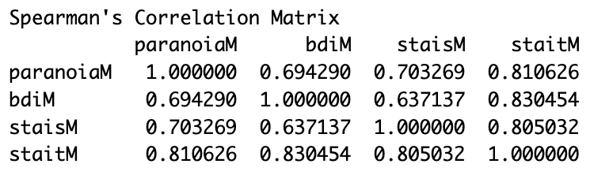
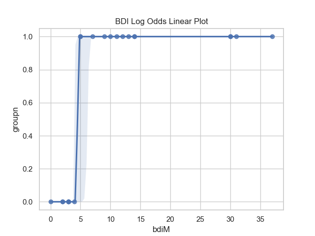
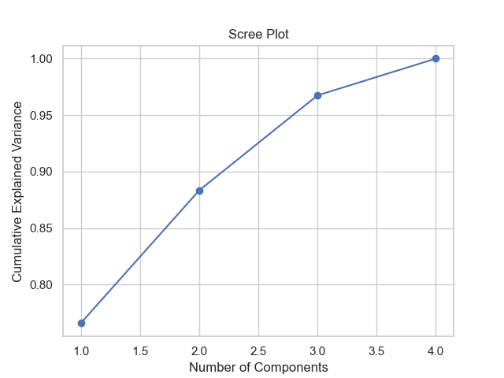
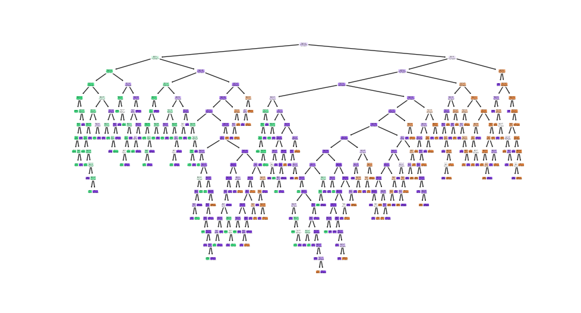

Analysis of BPD Diagnosis, Symptoms, and Severity Levels
Carol Milton, ctmilton@smith.edu
Smith College
Keywords: Borderline Personality Disorder, symptoms, severity
Abstract — This paper is an analysis to see if factors such as depression, anxiety, and paranoia can predict the diagnosis of Borderline Personality Disorder (BPD). A logistic regression using components created by these factors was fitted on a sample of BPD patients and health control cases. A Spearman Rank correlation test shows high correlations among the factors and the resulting the logistic regression model performs well. This paper also delves into the prediction of BPD severity levels using symptom groups and predicting the measurement scores of each symptom group using the other symptom groups as predictors. The random forest classifier model has a high accuracy for predicting the BPD severity levels Low, Medium, and High. The random forest regression models perform well with the models for predicting impulsivity and parasuicidal behavior doing the best and the model for predicting emptiness doing the worst.
1. Introduction
Borderline Personality Disorder (BPD) is a type of personality disorder characterized by marked impulsivity, mood instability, complications in interpersonal relationships, and suicidal behavior (Paris 2005). It is a serious mental health disorder that negatively impacts occupational and social functioning, while being associated with substance use, high rate of suicide, high rate of suicide attempts, and high health care utilization and costs (Zimmerman 2016). In a study comparing psychosocial functioning in patients with bipolar disorder and BPD, the depressed patients with BPD had lower rates of graduating from college, were diagnosed with more comorbid disorders, and more frequently had a history of substance use disorders. The depressed patients with BPD also reported more suicidal ideation, higher frequency of suicide attempts, poorer social functioning, and were rated lower on the Global Assessment of Functioning (Zimmerman et al. 2013).
A major challenge in treating Borderline Personality Disorder is first diagnosing it accurately within individuals. In the United States alone, about 1.6% of the population has been diagnosed with BPD, yet the actual percentage of the population with BPD may be as high as 5.9% (“Facts about Borderline Personality Disorder (Bpd) Adamhs Board of Cuyahoga County” n.d.). A study found that around 40% of people with BPD have been misdiagnosed with other disorders (Ruggero et al. 2010). Oftentimes, BPD can be misdiagnosed as Bipolar II or Major Depressive Disorder (MDD) since the depression in MDD and Bipolar II share many similarities, albeit some noticeable differences, with depression in BPD. This makes it difficult to accurately and easily diagnose BPD in patients (Silk 2010; Bayes, Parker, and Paris 2019). Unfortunately, there is not enough open source data to dive deeply into diagnosing if a person has BPD, MDD, or Bipolar II. Therefore, we take a step back to focus on the diagnosis of BPD by itself.
This paper delves into factors that can be used to set BPD patients apart from non-BPD patients and see if they can be used to accurately diagnose BPD in people. Depression, paranoia, and anxiety are highly associated with BPD and the former three are typically symptoms of the latter (Silk 2010; Freeman et al. 2005; Howard et al. 2021). Examining the relationship between these conditions and BPD and using them to predict BPD are useful due to the difficulty in diagnosing BPD and the tendency for misdiagnosis with Major Depressive Disorder (MDD) and Bipolar II (Silk 2010; Bayes, Parker, and Paris 2019). Previous studies mention the strong associations between depression and anxiety (Hettema 2008), anxiety and paranoia (Sun et al. 2019), and depression and paranoia (Moritz et al. 2017). This study assesses the correlations between all combinations of the three factors. The results can be further developed to see if BPD can be accurately diagnosed when there are also MDD and Bipolar II patients within the sample used to create the data.
Another challenge for treating Borderline Personality Disorder patients is understanding the severity of their BPD and associated symptoms. During treatment, measuring the severity of BPD before and after can be good indicators of whether or not the treatment is working (Zanarini 2009); Rinne et al. (2002)]. It is important for individuals to deeply understand how BPD affects their lives, since getting diagnosed with BPD is not the end. A BPD patient should also be aware of the severity of their disorder and whether having some symptoms means possibly having others. In this way, they can anticipate what they might feel/do should their BPD severity be high or increase. Therefore, this study focuses on using the BPD symptoms to predict the severity level of BPD, and checks if a type of symptom can be predicted by the measurements of other symptoms.
The focus of this paper’s investigations can be summarized in the research questions below:
- Can factors such as depression, anxiety, and paranoia be used to predict whether a person has Borderline Personality Disorder (BPD) or not?
- How do the factors, depression, anxiety, and paranoia, correlate with each other?
- Can the measurements of certain BPD symptoms predict high severity levels of BPD?
- Can the measurements of certain BPD symptoms be used to predict the measurements of other BPD symptoms?
Freeman et al. (2012) suggests that anxiety and depression are predictors for paranoia, so finding high correlations among the factors would make sense. Howard et al. (2021) mentions that existing research supports the idea that anxiety disorders contribute to BPD’s profile. This in addition to the work from Silk (2010) and Freeman et al. (2005) shows that the existing body of literature supports the idea that depression, anxiety, and paranoia can be used to predict BPD. Therefore, the expected results consist of high correlations between depression, state anxiety, trait anxiety, and paranoia. This means that each factor should be used by itself to predict Borderline Personality Disorder or a model that takes into account their interaction could work as well. Additionally, the factors, depression, anxiety, and paranoia, are expected to be good predictors for BPD.
Existing literature that takes the severity scores from the BPDSI-IV and turns it into categorical data have not yet been found. Literature about using the BPDSI-IV sub scale categories to predict BPD severity are likewise not yet found. Therefore, the models created for questions 3 and 4 are a new way of analyzing the measurements for the severity of BPD. In this way, the hope is for this paper to add to the existing literature.
The expectation is that groups created from the symptoms in the Severity dataset will be useful in predicting high levels of BPD severity since more symptoms usually means higher severity. Likewise, the measurement of a single group of symptoms may be better predicted by the measurements of the other groups, especially when the values are high.
2. Methodology
There were few open source datasets on Borderline Personality Disorder, but the two datasets used in this paper had important information that were used to answer the main questions of interest.
Factors Data
The Factors dataset, accessed through a Github repository, is used to investigate questions 1 and 2. The original dataset contains information about 34 participants, between the ages of 18 and 65, who are grouped into pairs of one Borderline Personality Disorder patient and one HCC (healthy control case). Within each pair, the participants share similar ages, sexes, ethnicities, and education-levels. After cleaning up the data, the sample size is 21, consisting of 10 females and 11 males, 14 participants with BPD and 7 HCC. The experiment was run twice and the participants appear to have participated multiple times.
The data relevant to the experiment conducted by Homan et al. (2017) is ignored since the only variables necessary are the ones about which group each subject belongs to (BPD or HCC) and their measurements of depression, trait anxiety, state anxiety, and paranoia taken before the experiment. The variable about the participant’s group is a binary categorical variable. The variables for the measurements of depression, trait anxiety, state anxiety, and paranoia are continuous quantitative variables. The measurement for depression was taken using the Beck Depression Inventory (BDI), which has a scale that ranges from 0 to 63 (Smarr and Keefer 2011). Paranoia was measured using the Paranoia Scale, which ranges from 20 to 100 (Freeman et al. 2005). State and Trait anxiety were measured using the Spielberger State-Trait Anxiety Inventory and each (state/trait anxiety) has a scale from 20 to 80 (Kayikcioglu et al. 2017).
The original Factors dataset was already mostly cleaned up. The additional steps for pre-processing required getting rid of trailing whitespaces and all NaNs in addition to closely examining the data. Once the data was checked, it was discovered that all values, regardless of runs or trials, were the same. Therefore, when preparing the data for analysis, the data points were condensed to ensure that all observations are independent of each other. The only issue with this was that the number of observations went from 2,176 to 21, which significantly limited the types of statistical analyses that could be done on it. In an ideal dataset, there would be many more participants and each participant would only take their measurements once to ensure the independence of observations, which is necessary for the analysis and will be further explained.
In order to answer question 1 of the four research questions, a logistic regression model was used. This model used the continuous explanatory variables, mean depression, mean paranoia, mean trait anxiety, and mean state anxiety, to predict if the subject had BPD or not (which is a binary variable). A logistic regression model best matched the variable types and is used to make predictions, which made it a good option for predicting whether or not a person has BPD. One point of caution was that the sample size had become very small, only 21 observations, which is not recommended for logistic regression. However, The data was still split into training and testing datasets in order to evaluate the model.
Before performing logistic regression, the correlations between the predicting factors, mean depression, mean paranoia, mean trait anxiety, and mean state anxiety, had to be checked. The distributions for all factors were non-normal, therefore the Spearman Rank correlation test was used to find the associations between each pair of factors. Checking the correlation among all factors answered question 2 and was useful to determine how to create the logistic regression model necessary to answer question 1.
Before starting the analysis, it was necessary to take note of what to expect and make hypotheses about the results.
Freeman et al. (2012) suggested that anxiety and depression are predictors for paranoia, so finding high correlations among the factors would make sense. Howard et al. (2021) mentioned that existing research supports the idea that anxiety disorders contribute to BPD’s profile. This in addition to Silk (2010) and Freeman et al. (2005) showed that the existing body of literature supports the idea that depression, anxiety, and paranoia can be used to predict BPD. The expected results should confirm these current findings in literature.
Therefore, the expected results would be high correlations between depression, state anxiety, trait anxiety, and paranoia. Additionally, the expectation is that depression, anxiety, and paranoia would be good predictors for BPD.
Severity Data
The Borderline Personality Disorder Severity Index, Fourth Edition (BPDSI-IV), which was created using the Diagnostic and Statistical Manual of Mental Disorders, Fourth Edition (DSM-IV), is one of the ways to measure the severity of a patient’s BPD. The BPDSI-IV has been identified as a reliable scale for measuring BPD severity (Giesen-Bloo et al. 2010). Therefore, the groups of symptoms in the BPDSI-IV, called the subscale groups, are used to predict the severity of BPD. This paper divides the severity score of BPD into the categories ‘Low’ ‘Medium’ and ‘High’. The subscale groups of symptoms were used to predict the ‘severe’ category of BPD severity. Additionally, a model for each subscale group was created such that the subscale group would be predicted by a combination of other subscale groups.
The Severity dataset contained measurements of the severity of BPD symptoms and the overall BPD severity (which was a sum of the scores of the symptoms). Measurements were taken using the Borderline Personality Disorder Severity Index 4th version (BPDSI-IV). The sample size is 683, taken from 4 survey studies: 18 subjects stem from a study by Dickhaut and Arntz, 86 subjects from a study by Giesen-Bloo and colleagues, 71 subjects from the Oulu BPD Study, and 508 subjects from data collected before 12th May 2016 in the ongoing trial by Wetzelaer and colleagues. More details are given by Klipstein, Borsboom, and Arntz (2021). One consideration when using this dataset was that it contained information from multiple studies done during different times and there were repeated measurements of the same participants in these studies. Since all the measurements were taken at different points, with different durations, on different people from different studies, each observation had to be considered independent in order to conduct analysis. Additionally, there waw no demographic information, thereby making it impossible to control for confounding variables.
The BDSI-IV assesses the occurrences of BPD symptoms in the past three months to calculate the severity of BPD on a scale from zero to eighty-four (Giesen-Bloo et al. 2010). The BPD symptoms are categorized into subscale groups taken from the DSM criteria: abandonment, interpersonal relationships, identity, impulsivity, parasuicidal behavior, affective instability, emptiness, outbursts of anger, and dissociation and paranoid ideation (Klipstein, Borsboom, and Arntz 2021). There were multiple questions, from 3 to 11, associated with each subscale group and the subscale score was calculated using the averaged scores of the associated questions (Rinne et al. 2002). Klipstein, Borsboom, and Arntz (2021) stated in their codebook that all subscale groups ranged from 0 to 10, except for identity, which supposedly ranged from 0 to 4 However, this was later found to be false and identity actually also ranged from 0 to 10. The BPD severity score was the sum of all subscale groups, which, with the newly identified range of all subscale groups, meant that the sum severity score ranged from 0 to 90.
The severity dataset was mostly cleaned up, but the subscale columns were renamed to better show what they represented. In order to answer question 3, the sum BPD severity score had to be changed from a continuous variable to a categorical variable. There was no information in literature about how to categorize the sum BPD severity score, thus K-means clustering was used to create clusters, which were used as thresholds to define the categories. First the sum BPD severity score was isolated, then it was scaled to create more accurate clusters. Using the within-cluster sum of squares and the silhouette score, the number of clusters was determined to be 3, which was optimal. After fitting the data and creating the 3 clusters, the minimum and maximum values of each cluster was used to separate the sum BPD severity score into 3 categories of Low, Medium, and High.
Initially, dimensionality reduction was supposed to be used to reduce the number of subscale groups and make it easier to create models to answer question 4. Unfortunately, getting a reconstruction error rate below 0.5 required at least 5 variables, while the optimal number was 3. Therefore, to get a better idea of which subscale groups were better predicted by the other subscale groups, no dimensionality reduction was performed.
In order to answer questions 3 and 4, the supervised learning algorithm, random forest, was used. Random forest had previously been used to explore potential features (in this example emotions) in detecting whether or not someone had BPD and achieved good performance with an accuracy of 81.03% (Deb et al. 2022). Therefore, this machine learning algorithm was expected to create models that performed well in answering questions 3 and 4.
For question 3, the random forrest classification model was used since the response variable was the categorical variable, BPD severity (BPDSIsumCat). The random forest regression model was used for question 4 since the response variable was a symptom group (the subscale group), and each symptom group was quantitative. The random forest regression models were meant to predict each symptom group using the other symptom groups, thus nine models were created (one for each group). Then, the mean squared error was calculated to evaluate each model’s accuracy. Since random forest is an ensemble method and consists of many decision trees, overfitting the data could be avoided, which might have occurred when using only one decision tree. One important reason for choosing the random forest was because it is non-parametric, therefore, there was no need to worry about the non-normal distributions of all variables.
It was difficult to find any existing literature that takes the severity scores from the BPDSI-IV and turns it into categorical data. It was also hard to find literature about using the BPDSI-IV sub scale categories to predict BPD severity. Therefore, the models created for questions 3 and 4 are a new way of analyzing the measurements for the severity of BPD. In this way, the hope is that this analysis can add to existing literature.
The hypothesis was that the symptom groups would be useful in predicting the levels of BPD severity since more symptoms usually means higher severity. Likewise, the measurement of a single group of symptoms were hypthesized to be better predicted by the measurements of the other groups, especially when the values were high.
3. Results
This section contains the results for the analyses done on each dataset.
Factors Analysis
When doing the Spearman Rank correlation test, there were high correlations between all factors as shown below. ParanoiaM was the average paranoia score, bdiM was the average depression score, stais was the average state anxiety score, and stait was the average trait anxiety score. All pairs of factors had a correlation higher than 0.6, which meant that either logistic regression models had to be fit on each factor (so 4 models), or dimensionality reduction had to be used to create more suited predictors.

The first attempt was to create logistic regression models for each predictor. When doing the condition checking for linearity in log odds, there was a perfect separation error for the depression variable. The reason was that the outcome below a certain depression score value was always 0 (which meant that the individual did not have BPD), and any outcomes above that score was always 1 (which meant that the individual had BPD). Probably due to the small sample size, there was no variation in the data which meant that any logistic regression model created from this would be overfitting the data. Therefore, no model was created for the depression variable.

When creating logistic regression models for the other variables, only the paranoia variable had a p-value (0.039) below alpha (0.05), which meant that only paranoia was a significant predictor for BPD diagnosis. One thing to note was that gender, the confounding variable, was not significant for any of the models, therefore it was excluded in further analysis. Gender was probably a real confounder, however, the sample was too small to make a true difference. After that was when the second attempt was made by performing dimensionality reduction on the predictors to create 3 components. The number of components was determined through a scree plot.

The aim was to create a logistic regression with the 3 components, however the small sample size would make it difficult to evaluate when using only one training and testing dataset. Then the k-folds cross validation method was implemented using two scoring metrics (‘accuracy’ and ‘recall’) to better test the model. The overall accuracy score was 86%, which showed was decent, however, a higher accuracy would have been better to avoid misdiagnosing patients. The recall score was 90%, which was the proportion of correctly predicted positive instances out of all actual positive instances and measured the model’s ability to identify positive cases and minimizes false negatives. This percentage was also good. A Brier score was calculated to measure the mean squared difference between the predicted probabilities and the actual binary outcomes. The Brier score was 0.14, showing that the model’s predicted outcomes were fairly close to the real outcomes.
Severity Analysis
A random forest classifier was fitted on the data where BPDSIsumCat, the categorical variable for the BPD severity was the response variable, and the predictors were the symptom groups: abandonment, interpersonal relationships, identity, impulsivity, parasuicidal behavior, affective instability, emptiness, outbursts of anger, and dissociation and paranoid ideation. The data was split into training and testing datasets and 100 trees were created. The figure below shows the first decision tree in the random forest classifier. This model had a 94.3% accuracy, which was fairly high and thus made this model a good predictor for the severity level of BPD.

After doing 9 random forest regression models, one for each symptom group, the mean-squared error (MSE) was used to evaluate which models were more useful. All models except for the model using emptiness as the response variable had a MSE less than 3.0. The emptiness model had an MSE of 4.7. The models with an MSE less than 1 had the corresponding response variables impulsivity and parasuicidal behavior with the latter model having the smallest MSE (about 0.50).
4. Discussion
The research questions pertaining to this paper are re-stated below:
- Can factors such as depression, anxiety, and paranoia be used to predict whether a person has Borderline Personality Disorder (BPD) or not?
- How do the factors, depression, anxiety, and paranoia, correlate with each other?
- Can the measurements of certain BPD symptoms predict high severity levels of BPD?
- Can the measurements of certain BPD symptoms be used to predict the measurements of other BPD symptoms?
According to the results section, there are strong correlations among the factors depression, state and trait anxiety, and paranoia. This is consistent with existing literature and provides evidence that the hypothesis was correct. After creating logistic regression models for each factor, it was found that only paranoia was a statistically significant predictor of BPD diagnosis. This does not match well with the existing literature. In addition to that, gender was not a significant confounding variable in the models, which goes against what the existing literature says. However, these results may be due to the very small sample size of 21 observations. Therefore, conducting the analyses from this paper on a larger dataset with numerous observations may prove that each factor can be separately used to predict BPD diagnosis well.
Performing dimensionality reduction with Principle Component Analysis (PCA) was good way to incorporate all factors, despite their high correlations with each other, in order to create a logistic regression model with good performance. The evaluations on this model shows that it can be used to predict whether or not an individual had Borderline Personality Disorder. On the other hand, since we would want to use this kind of model for helping with the diagnosis of BPD, we would want it to be much more accurate with very low false negatives and false positives. This model was created from only BPD patients, or healthy control cases (who do not have BPD), so the fact that this model only had a moderate performance means that the having a sample of BPD patienst and healthy control cases mixed with Bipolar II and/or Major Depressive Disorder patients could significantly decrease the performance level of a machine learning classifier. This means that although depression, state and trait anxiety, and paranoia are good predictors for BPD diagnosis, more research needs to be done and more features are probably needed to improve the model’s results such that it can be used to help professionals diagnose BPD in potential patients.
Moving on to the next set of questions, the random forest classifier was very good at predicting the severity levels of Borderline Personality Disorder. This provides evidence to support the initial hypothesis. Although there could not be found any literature about categorizing the BPD severity and using the symptom groups to predict the severity levels, it makes sense for this model to work well since the symptom groups are used to evaluate BPD in a person in the first place (in the DSM criteria for BPD). The only issue was the I could not focus on only the high BPD severity levels within the time give. Focusing on evaluating performance for the high BPD severity level would require more time, which could be done in a future endeavor.
The random forest regression models where one symptom group is predicted by the other symptom groups seems to work well. The models work best in predicting impulsivity and parasuicidal behavior while doing the worst in predicting emptiness. However, the MSE for all models is relatively low, so it is evidence that the BPD symptoms can, in fact, be well predicted by the measurements of the other BPD symptoms. These results make sense and follow the corresponding hypothesis from the beginning of this paper.
Some limitations of this paper include the small sample size of the Factors dataset and the issue of a clear confounding variable (gender) not being significant in the logistic regression models, which means that the results may not be as valid. On the other hand, the severity dataset did not even have demographic data so there was no way to control for confounding variables.
5. Future Directions
When compared to bipolar disorder, Borderline Personality Disorder is just as frequent (if not more), just as impairing (if not more), and just as lethal (if not more). Although having BPD comes with such significant effects on a patient’s life, as of 2016, research on BPD has received less than one-tenth of the funding for bipolar disorder from the National Institute of Health. BPD has also been the focus of much less publications in most prestigious psychiatric journals compared to bipolar disorder (Zimmerman 2016). Therefore, it is imperative that there be more studies done to better understand the implications of BPD and how to better treat patients with BPD in addition to finding ways to accurately diagnose BPD patients without misdiagnosing them as Bipolar II or MDD patients.
Future work in this may entail trying to categorize a patient according to their symptoms and determine a diagnosis of BPD, Bipolar II, or MDD. The symptoms could be used to predict the diagnosis. Since there would be multiple diagnostic possibilities, a machine learning classifier model would be more appropriate than a logistic regression model.
Additional future work may involve delving into the role of confounding variables such as gender and how these variables affect the diagnosis of BPD and the prediction of BPD severity levels. Qian et al. (2022) states that males are more likely to present externalizing symptoms in comparison to females, so it would be interesting to see what this means in terms of predictive BPD severity levels and predicting the measurements of symptom groups.
Paris (2007) explains that Borderline Personality Disorder should be better defined by requiring more criteria in more domains in the DSM. This means that there may be future research and revisions done to better define what BPD is. Over time, the definition of BPD may change, so the analysis from this paper could be redone with better datasets and newly revised/re-organized symptom groups. This may result in models that better predict the diagnosis of BPD.
6. Personal Reflection
The research question I originally had is below: What social factors affect the development of Borderline Personality Disorder (BPD)?
The dataset I intended to use to answer this question (which I refer to as Factors dataset), did not have an explicit description of the variables so I spent a lot of time decoding the variables by referencing the related research paper Homan et al. (2017), looking into the references in this paper to find out the measurement scales for the variables, and using some variables in the table to figure out the meaning of the values of other variables. It was difficult to determine how some variables were measured and what the values for some variables meant. After most of my investigation was done, I realized that the Factors dataset could not answer the original question (above) because it did not have the necessary variables. Therefore, I had to change my research question into what is stated below:
- Can factors such as depression, anxiety, and paranoia be used to predict whether a person has Borderline Personality Disorder (BPD) or not?
Additionally, the Factors dataset had a much smaller sample size than what was initially shown, so I spent a lot of time trying to figure out how to properly evaluate the resulting logistic model and I ended up with the k-folds cross validation. I spent a lot of time figuring out why I was getting the perfect separation error for only the depression variable and implementing the dimensionality reduction with PCA was much more difficult than anticipated.
I had never done a project on machine learning before so I basically started from 0 and learned everything while I was doing this project. I believe that rather than creating the models, it took more effort to determine the number of components for PCA and choosing how to evaluate all the models. Also, I had never used python for my data science projects, so it was a new experience to write all of my machine learning and statistical analysis code in python instead of R. In the end, due to time constraints, I could not do more in-depth evaluations on the models derived from the Severity data.
Although there were many challenges, I truly enjoyed doing this project and I learned so much so it was all worth the effort in the end.
7. Code Availability
All analysis for this article is available at: https://github.com/ctmilton/BPDseverity_analysis.git
8. Acknowledgements
I would like to thank Professor Rosie Dutt for her enormous support. Her availability, class organization, and detailed feedback truly helped to improve this paper.